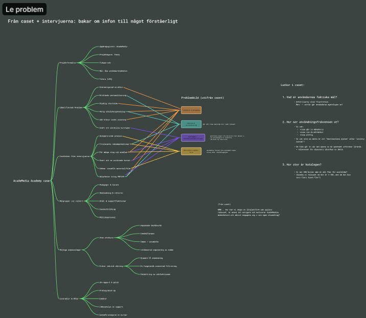

Background
Designing within a real organizational context
This project was completed in collaboration with AcadeMedia and involved working with a real business challenge under strict confidentiality. Because of this, specific details, internal material and final solutions cannot be publicly shared.